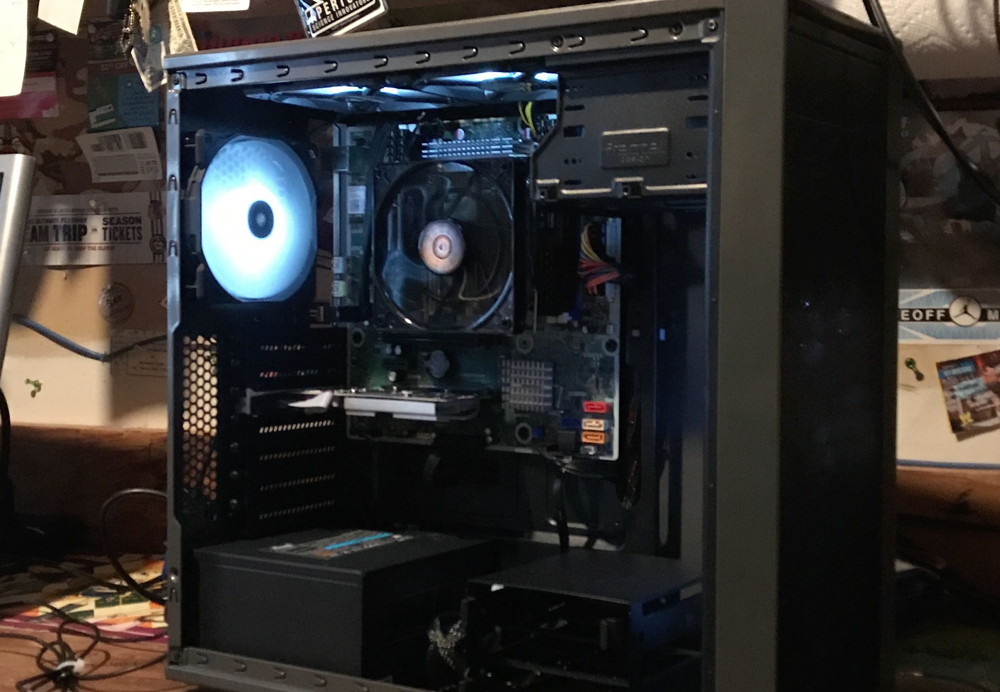

Andy Jakub Kukuc

Who Am I?
I am Andy Jakub Kukuc. I am a 4th year Undergraduate Student at Illinois Institute of Technology. I am a double major in Computer Science and Information Technology Management. I have three hobbies and the first one I love working on my car. I have a 2009 Shelby GT 500. I put a lot of time and money into making it a very unique car. Whenever I am not programming or designing UX/UI applications I am in my garage working on "King Cobra". Also I love to wear suits so here is a picture of me in a suit next to my car. No I don't work on my car in a suit HAHAHAHAH.
Mountain Biking

My second hobby is mountain biking. Ever since I was little I always rode my bike everywhere. As I got my license I completely forgot about riding a bike and started to miss out on the fresh air and the wind blowing through my hair. Over summer I bought a bike from my old Kickboxing Trainer and already put about 200 miles on it. I wake up every day at 5am and ride my bike about 10 miles. I like to stay in shape but after a couple powerlifitng injuries I can't really strength train anymore. That is why one of my top hobbies is mountain biking!
Computer Building
My third and final hobby is building computers. The photo attached is one of my recent builds. I started building computers and servers when I was a sophomore in high school. Through out my life I built approximately 200 computers for all my clients. The computers that I built all range from light office work to heavy duty mining servers. Computer Building will be one of my hobbies that I will pass on to my children in the future. If you need a computer built come to me and I will help you build it!
- HP Viking Motherboard
- 32GB Corsair RAM
- 500GB Samsung 850 EVO Solid State Drive
- Intel I7 6 Core 12 Thread 7th Generation Processor
- 650 Watt Rosewill Power Supply